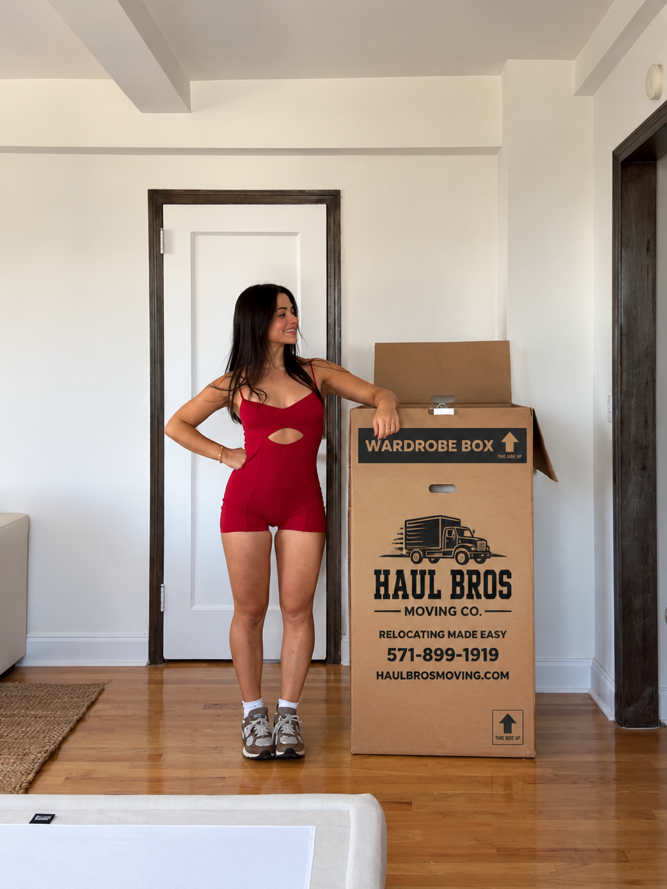

Affordable & Top-Rated Movers in Stafford, VA: Moving Costs, Services & Local Guide
Compare moving costs, services, and practical tips for choosing affordable, top-rated movers in Stafford, VA with Haul Bros Moving Co LLC.

Affordable & Top-Rated Movers in Stafford, VA: Moving Costs, Services & Local Guide
Updated for 2026 | By Haul Bros Moving Co LLC
Looking for **affordable movers in Stafford, VA**?
Whether you're moving across Stafford County, relocating closer to Quantico, moving from Stafford to Fredericksburg, heading north toward Woodbridge or Fairfax, or planning a long-distance relocation, choosing the right moving company can make a major difference.
Most customers searching for movers in Stafford want answers to the same questions:
How much do movers cost in Stafford, VA?
What should professional moving services include?
How do I find a reliable and highly rated Stafford moving company?
Can movers handle stairs, large furniture, packing, storage units, and military moves?
At **Haul Bros Moving Co LLC**, we provide professional moving services throughout Stafford County and the greater Northern Virginia region with straightforward pricing, professional moving crews, and the equipment needed to handle moves of different sizes.
From apartments and townhouses to four- and five-bedroom homes, our goal is simple:
Relocating Made Easy.
Looking for Affordable Movers in Stafford, VA?
Affordable moving isn't necessarily about finding the lowest advertised hourly rate.
It's about understanding **what you're receiving for the price**.
Before hiring a moving company, ask whether your estimate includes:
- Moving truck
- Professional movers
- Fuel
- Loading
- Transportation
- Unloading
- Moving blankets
- Shrink wrap
- Dollies
- Moving equipment
- Floor protection
- Basic furniture disassembly
- Basic furniture reassembly
A low advertised rate can become much more expensive when basic moving services are added separately.
At **Haul Bros Moving Co LLC**, we focus on straightforward pricing so customers understand the cost structure before moving day.
How Much Do Movers Cost in Stafford, VA?
The cost of hiring movers in Stafford depends on your move.
Major pricing factors include:
- Home size
- Number of movers
- Amount of furniture
- Number of boxes
- Stairs
- Walking distance
- Elevator access
- Parking conditions
- Packing requirements
- Heavy or specialty items
- Travel distance
- Total moving time
Haul Bros Moving Co LLC currently offers the following local moving rates:
2 Movers + 26-Foot Moving Truck
$395 for the first 2 hours
$159 per additional hour
This option may be appropriate for smaller moves, including apartments, condos, storage units, and limited household inventories.
3 Movers + 26-Foot Moving Truck
$495 for the first 2 hours
$189 per additional hour
Three movers may be more efficient for larger apartments, two- or three-bedroom homes, townhouses, or moves involving multiple floors.
4 Movers + 26-Foot Moving Truck
$695 for the first 2 hours
$249 per additional hour
Four movers may be recommended for larger homes, heavier inventories, multi-level properties, and moves where a larger crew can improve efficiency.
The best crew isn't always the smallest crew.
For example, using three or four movers on a larger Stafford home can sometimes be more efficient than having two movers complete the same workload over a much longer period.
What's Included With Haul Bros Moving Co LLC?
When comparing Stafford moving companies, compare the complete service rather than only the hourly number.
Our local moving services can include:
- Professional moving crew
- 26-foot moving truck
- Loading and unloading
- Transportation
- Furniture protection
- Moving blankets
- Shrink wrap when appropriate
- Dollies
- Hand trucks
- Moving straps
- Floor protection
- Basic furniture disassembly
- Basic furniture reassembly
- Furniture placement at delivery
Your specific services and pricing are confirmed before moving day.
Our goal is to make pricing clear without adding unnecessary surprise charges after the move begins.
What Should You Look for in a Top-Rated Stafford Moving Company?
If you're searching online for the **best movers in Stafford, VA** or **top-rated moving companies near Stafford**, don't rely on a single advertisement.
There are several factors worth comparing.
Recent Customer Reviews
Look beyond the overall star rating.
Read recent reviews to see what customers say about:
- Communication
- Careful handling
- Arrival times
- Professionalism
- Efficiency
- Pricing
- Problem resolution
Clear Estimates
Your mover should explain how pricing works before moving day.
Ask what's included and what could cause the final price to change.
Licensing and Insurance
Ask the moving company for its business and transportation credentials when appropriate for your move.
Local Experience
A moving company serving Stafford regularly should understand the local area, including major roads, residential communities, apartments, storage facilities, and common traffic conditions.
Professional Equipment
Moving blankets, dollies, straps, shrink wrap, and appropriate trucks help protect both your belongings and the property.
Communication
You shouldn't be wondering whether your movers are coming.
Professional communication should include your moving date, arrival window, pricing structure, addresses, services, and booking confirmation.
Why Stafford Customers Choose Haul Bros Moving Co LLC
Haul Bros Moving Co LLC serves Stafford and communities throughout Northern Virginia.
We're focused on combining **professional moving service with competitive, straightforward pricing**.
Local Knowledge
Our crews serve Stafford, Woodbridge, Fredericksburg, Dumfries, Quantico, and communities throughout the I-95 corridor.
Multiple Crew Options
Different moves require different crews.
We can recommend two, three, or four movers depending on your inventory and property.
Professional Equipment
We arrive with the moving equipment required for the scheduled service.
Residential and Commercial Moving
We're equipped for more than standard residential relocations.
Our services include:
- Local moving
- Long-distance moving
- Apartment moving
- Condo moving
- Townhouse moving
- House moving
- Office moving
- Commercial relocation
- Labor-only moving
- Packing and unpacking
- Storage moves
- Senior moving
- Military and PCS moving
- Student moving
- Last-minute moving
- Small moves
- Single-item moving
- Junk removal
Areas We Serve Around Stafford, Virginia
Stafford County includes many different residential communities and neighborhoods.
Haul Bros Moving Co LLC serves customers throughout areas such as:
North Stafford
Garrisonville
Aquia Harbour
Embrey Mill
Hampton Oaks
Austin Ridge
Falmouth
Widewater
Hartwood
Stafford Courthouse
as well as surrounding areas including:
Quantico
Dumfries
Triangle
Woodbridge
Fredericksburg
Spotsylvania
and other Northern Virginia communities.
North Stafford Movers
North Stafford is particularly convenient for households that need access to Quantico, Prince William County, and the greater Northern Virginia region.
Moves in North Stafford often involve:
- Townhouses
- Single-family homes
- Apartments
- Storage units
- Military relocations
- Local moves between Stafford communities
If you're moving from North Stafford to Woodbridge, Dumfries, Quantico, Fairfax, Alexandria, or another Northern Virginia destination, Haul Bros can handle the loading, transportation, and unloading.
Garrisonville Movers
The Garrisonville area is one of Stafford's busiest residential and commercial areas.
When moving around Garrisonville Road and Route 610, scheduling and truck access matter.
A moving company should consider:
- Community access
- Driveway availability
- Parking
- Apartment restrictions
- Traffic
- Number of floors
- Walking distance
- Furniture inventory
Providing these details before moving day helps your movers arrive with an appropriate crew and plan.
Aquia Harbour Movers
Moving within or around Aquia Harbour can involve larger single-family homes and household inventories.
For larger moves, we recommend providing a complete furniture inventory and approximate box count before receiving your estimate.
This helps determine whether two, three, or four movers are appropriate for the job.
Embrey Mill Movers
Newer communities such as Embrey Mill often involve moves into townhouses and larger single-family homes.
If you're moving into a newly built home, professional floor and furniture protection can be especially important.
Our moving crews use protective equipment to help reduce the risk of damage while furniture and boxes are being carried into your new home.
Apartment Movers in Stafford, VA
Moving from an apartment?
Before your movers arrive, confirm:
- Floor number
- Stair access
- Elevator access
- Freight elevator availability
- Elevator reservation requirements
- Loading area
- Truck parking
- Building moving hours
- Certificate of Insurance requirements
- Distance from apartment to truck
A third-floor apartment without an elevator requires a different moving plan than a ground-floor unit.
Giving your mover accurate information helps produce a more realistic estimate.
Townhouse Movers in Stafford
Townhouse moves are common throughout Stafford County.
Multiple floors can make furniture handling more challenging, particularly for:
- King beds
- Queen beds
- Dressers
- Sectionals
- Sofas
- Dining tables
- Office desks
- Exercise equipment
Some furniture may need to be partially disassembled to move safely through stairs, hallways, and doorways.
Haul Bros can provide basic furniture disassembly and reassembly as part of qualifying moving services.
House Movers in Stafford, VA
Moving a larger Stafford home?
The most important step before receiving an estimate is creating an accurate inventory.
Tell your mover about:
- Bedrooms
- Living-room furniture
- Dining-room furniture
- Office furniture
- Garage items
- Patio furniture
- Exercise equipment
- Appliances
- Large TVs
- Heavy furniture
- Number of boxes
- Storage areas
Don't forget the basement, garage, attic, shed, or outdoor furniture.
These areas can contain a significant portion of a household's moving volume.
Military & PCS Movers Near Stafford and Quantico
Stafford's proximity to **Marine Corps Base Quantico** makes military moves particularly relevant to the area.
Haul Bros Moving Co LLC assists military households with services including:
- Local relocations
- PCS-related moving assistance
- Packing
- Loading
- Transportation
- Unloading
- Storage moves
- Labor-only moving
- Furniture assembly and disassembly
We also offer a **5% military discount**.
If you're planning a military relocation, let us know when requesting your estimate so the appropriate discount can be applied to eligible services.
Stafford to Fredericksburg Movers
Moving from Stafford to Fredericksburg is a common local relocation.
Haul Bros can handle the complete move:
Stafford Pickup → Loading → Transportation → Fredericksburg Delivery → Unloading → Furniture Placement
We also serve customers moving in the opposite direction from Fredericksburg into Stafford County.
Stafford to Woodbridge Movers
Moving north?
Haul Bros Moving Co LLC is based in the Woodbridge area, making Stafford-to-Woodbridge and Woodbridge-to-Stafford relocations an important part of our service area.
We serve:
- Stafford
- Triangle
- Dumfries
- Montclair
- Dale City
- Lake Ridge
- Woodbridge
and surrounding communities along the Northern Virginia I-95 corridor.
Stafford to Fairfax, Alexandria & Northern Virginia
We also help customers moving from Stafford farther into Northern Virginia.
Common destinations include:
Fairfax
Springfield
Alexandria
Arlington
Manassas
Centreville
Chantilly
Reston
Herndon
Tysons
McLean
Travel time can vary significantly along I-95 and other Northern Virginia routes, so your moving estimate should account for the actual pickup and delivery locations.
Long-Distance Movers From Stafford, VA
Leaving Virginia?
Haul Bros Moving Co LLC also provides long-distance moving services.
Long-distance relocations require additional planning because distance, inventory, transportation requirements, delivery scheduling, and other factors can affect pricing.
For these moves, provide your complete pickup and delivery information along with an accurate inventory so we can prepare an appropriate estimate.
Packing Services in Stafford, VA
Don't want to pack everything yourself?
Haul Bros can provide:
Full Packing
Our team packs the household items included in your estimate.
Partial Packing
We pack only selected rooms or items.
This is particularly useful if you only need assistance with:
- Kitchenware
- Glassware
- Fragile items
- Artwork
- Electronics
- Closets
- Office items
Customers can also pack their own boxes and hire us only for the actual move.
Labor-Only Movers in Stafford
Already have your own transportation?
You can hire Haul Bros for moving labor.
We can assist with:
- U-Haul loading
- U-Haul unloading
- Penske truck loading
- Rental truck unloading
- POD loading
- POD unloading
- Moving container loading
- Storage unit loading
- Storage unit unloading
- Furniture rearrangement
Labor-only service can be a cost-effective option when you don't require a moving truck.
Moving Into or Out of a Stafford Storage Unit
If your move involves storage, provide your movers with:
- Storage facility location
- Unit dimensions
- How full the unit is
- Floor number
- Elevator availability
- Truck access
- Estimated box count
- Furniture inventory
The size of the unit alone doesn't always indicate how much is inside.
A lightly filled 10×20 unit can require less work than a tightly packed 10×10 unit.
How Can I Make My Stafford Move More Affordable?
There are several practical ways to reduce your moving cost.
Declutter Before Moving
Don't pay movers to transport items you already plan to throw away or donate.
Pack Before Your Crew Arrives
If you're handling your own packing, have boxes sealed and labeled before moving day.
Disclose Everything
Tell your moving company about stairs, elevators, long walking distances, and heavy items beforehand.
Reserve Elevators Early
If you're moving from an apartment, coordinate with property management before moving day.
Create an Inventory
A detailed inventory helps your mover recommend an appropriate crew.
Keep Pathways Clear
Clear hallways and entrances allow movers to work more efficiently.
Being prepared can reduce unnecessary moving time without sacrificing professional service.
Frequently Asked Questions About Movers in Stafford, VA
How much do movers cost in Stafford, VA?
Moving costs depend on crew size, inventory, access, distance, and total time. Haul Bros Moving Co LLC currently starts at **$395 for the first two hours with two professional movers and a moving truck**.
What is an affordable moving company in Stafford, VA?
An affordable mover provides competitive pricing while still offering the professional labor, equipment, transportation, protection, and communication necessary to complete the move properly. Compare the complete written estimate rather than only the advertised hourly rate.
Does Haul Bros Moving Co LLC serve Stafford?
Yes. Haul Bros serves Stafford County as well as Woodbridge, Dumfries, Quantico, Fredericksburg, Manassas, Fairfax, Springfield, Alexandria, Arlington, Washington, DC, Maryland, and surrounding DMV communities.
Do you serve North Stafford?
Yes. North Stafford is within our service area.
Do you provide movers near Quantico?
Yes. We provide moving services in Stafford, Quantico, Triangle, Dumfries, and surrounding communities.
Do you offer a military discount?
Yes. Haul Bros Moving Co LLC offers a **5% military discount** for eligible customers.
Do Stafford movers charge for stairs?
Policies vary by company. Haul Bros does not add a separate ordinary stair fee under our quoted local moving structure. Stairs can still affect the total time required to complete the move.
Do you charge extra for elevators?
We do not add a separate ordinary elevator fee under our quoted local moving structure. However, elevator availability, reservations, and walking distance can affect moving time.
Is the moving truck included?
Yes, our standard full-service local moving packages listed above include the moving truck.
Are moving blankets included?
Yes. Moving blankets and standard moving equipment are included with applicable moving services.
Will movers disassemble my bed?
Basic furniture disassembly and reassembly can be provided when necessary and included in your moving service.
Can you move a four-bedroom house in Stafford?
Yes. Haul Bros handles larger residential moves. A three- or four-person crew may be recommended depending on inventory, floors, access, and other conditions.
Can movers load my POD or U-Haul?
Yes. Labor-only moving services are available for rental trucks, PODs, containers, trailers, and storage units.
Do you provide packing services in Stafford?
Yes. Full and partial packing services are available.
Do you handle last-minute moves?
Last-minute moving services may be available depending on our schedule and crew availability.
Do you provide long-distance moving from Stafford?
Yes. Haul Bros provides both local and long-distance moving services.
How many movers do I need?
A small apartment may only require two movers. Larger apartments, townhouses, and houses may benefit from three or four movers. Inventory, stairs, walking distance, heavy items, and property layout should all be considered.
How early should I book movers?
Book as early as possible if you need a particular date, especially for weekends, month-end dates, summer moves, and other high-demand periods.
Need Affordable Movers in Stafford, VA?
Choosing a moving company shouldn't come down to price alone.
Look for a company that provides:
Clear pricing.
Professional movers.
Proper equipment.
Reliable communication.
Local experience.
Strong customer service.
At **Haul Bros Moving Co LLC**, we provide professional moving services throughout Stafford County and Northern Virginia while keeping our pricing straightforward and competitive.
Whether you're moving from an apartment in North Stafford, a townhouse near Garrisonville, a home in Embrey Mill or Aquia Harbour, relocating near Quantico, moving south toward Fredericksburg, or heading north into Northern Virginia, we're ready to help.
Haul Bros Moving Co LLC
Relocating Made Easy.
Serving Stafford, North Stafford, Garrisonville, Aquia Harbour, Embrey Mill, Falmouth, Quantico, Fredericksburg, Woodbridge & Northern Virginia
USDOT #4497497
Local Moving | Long-Distance Moving | Packing | Labor Only | Military/PCS Moving | Commercial Moving | Storage Moves | Senior Moving | Small Moves | Junk Removal
Request your personalized moving estimate from **Haul Bros Moving Co LLC** and find out what your Stafford move will actually cost.